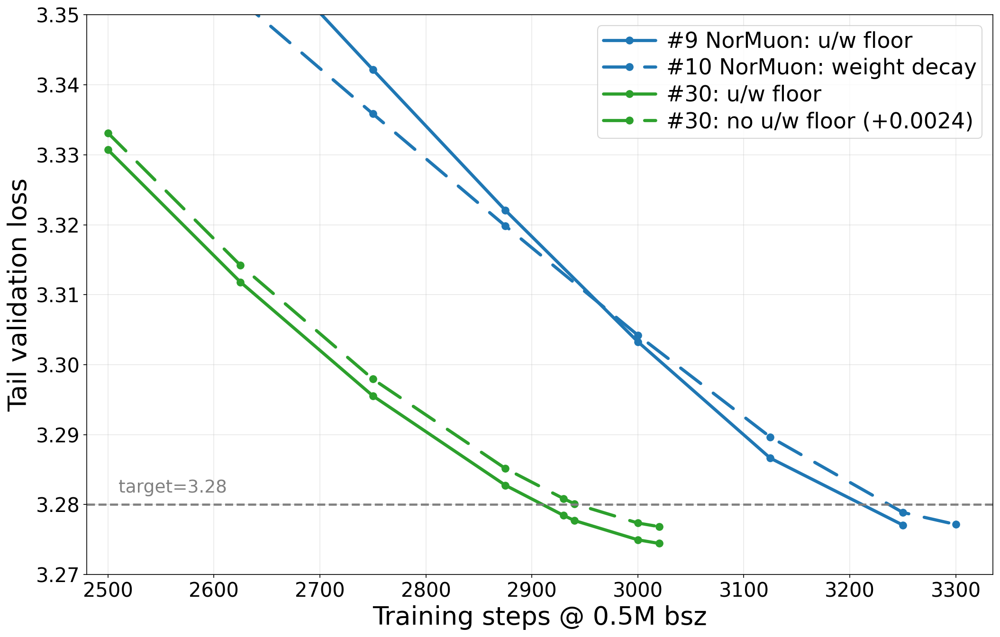
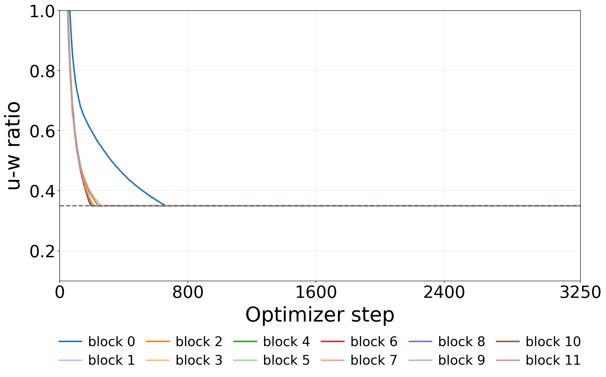
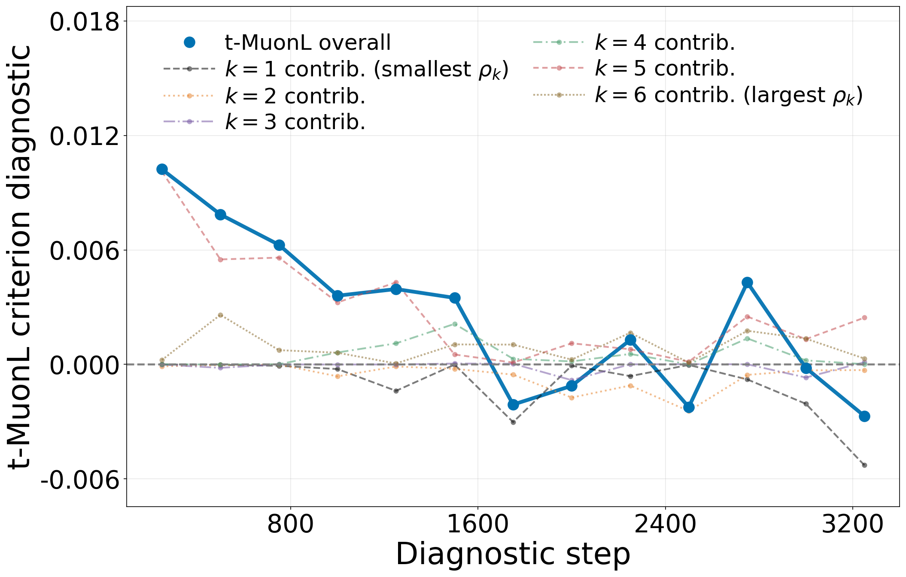
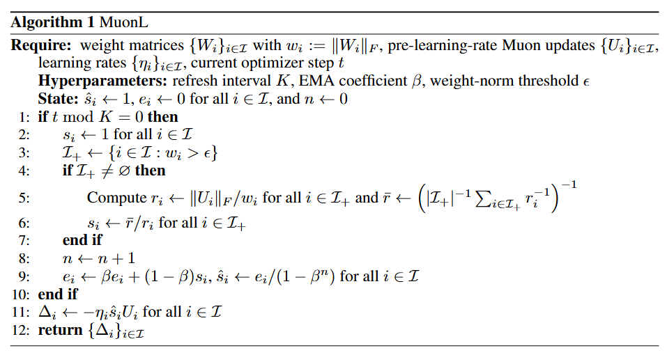
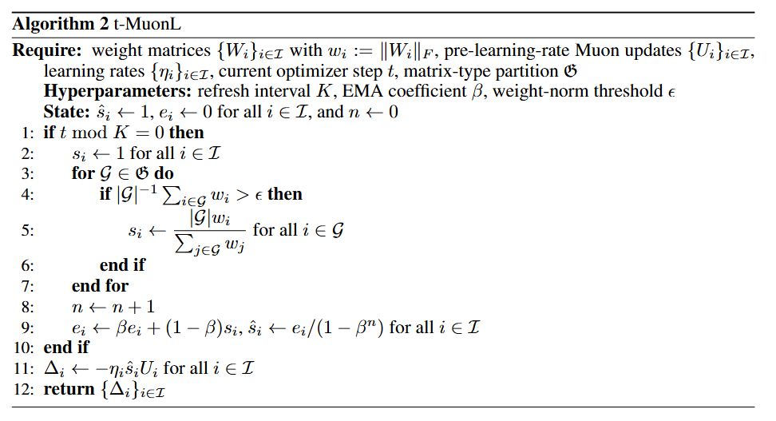
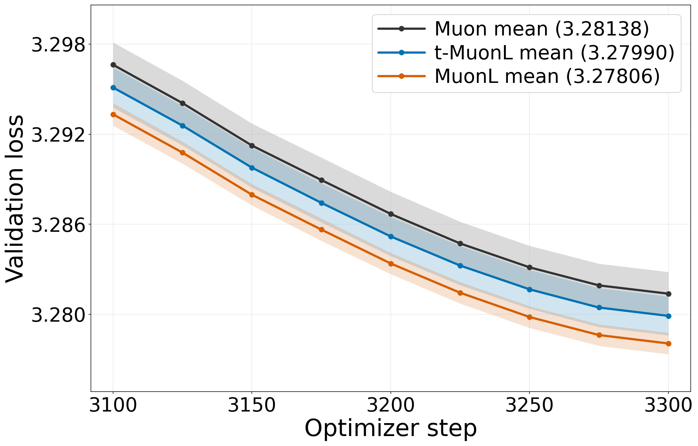
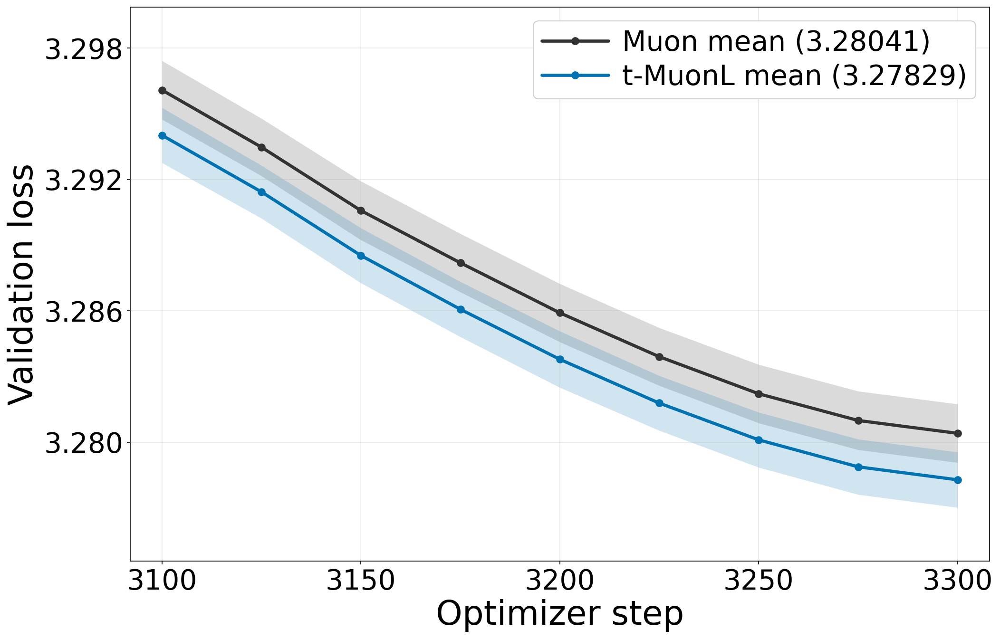

Does U-W Ratio Alignment Benefit Muon in LLM Pretraining?
The u/w floor is a recurring ingredient in strong entries of the modded-nanogpt optimization benchmark (Track 3). It enforces a minimum update-to-weight norm ratio and, when blocks hit that threshold, aligns their relative update sizes. Does this alignment help explain the u/w floor’s benefit?
We study this directly with MuonL, which aligns ratios across all Muon-updated matrices, and t-MuonL, which aligns them within each matrix type. Local optimization criteria and pretraining experiments show when these interventions help.
1. Motivation: what does the u/w floor do?
The benchmark holds architecture, data, and batch size fixed and measures the training steps needed to reach validation loss 3.28. The u/w floor lower-bounds each matrix’s update size relative to its weight size:
For a matrix block indexed by \(`i`\):
- \(`W_i`\): weight matrix; \(`U_i`\): optimizer update before multiplying by the learning rate.
- \(`\lVert\cdot\rVert_F`\): Frobenius norm, the square root of the sum of squared matrix entries.
- \(`r_i=\lVert U_i\rVert_F/\lVert W_i\rVert_F`\): u-w ratio, measuring update size relative to weight size.
- \(`c>0`\): u/w floor threshold. The u/w floor applies
U_i\leftarrow\max\left(1,\frac{c}{r_i}\right)U_i,
\qquad
r_i\longmapsto\max(r_i,c).The two plots connect the u/w floor’s performance benefit to ratio alignment. Left: benchmark comparisons with and without the u/w floor; the u/w floor reaches the target in about 0.8–1.1% fewer steps. Right: during training with the u/w floor, ratios from different layers settle at the same threshold.
|
 |
 |
| Performance with the u/w floor. NorMuon (blue) and Aurora (green), two Muon variants. Solid curves use the u/w floor; dashed curves are the corresponding controls. The batch-size label refers to approximately 0.5M tokens per step. Entry numbers identify submissions, not ranks. | Alignment induced by the u/w floor. Attention output projections across 12 Transformer layers. Their u-w ratios reach the same threshold, c = 0.35, early and remain aligned. |
The u/w floor has two effects: it prevents updates from becoming too small relative to weights, and it aligns ratios across blocks that hit the u/w floor. Decoupled weight decay can control relative update scale, but does not explicitly impose this equality at each step.
Our intervention: remove the u/w floor, directly align u-w ratios, and retain decoupled weight decay. Test whether alignment itself contributes to the benefit.
2. Setup: what is aligned, and what do we measure?
Blocks, groups, and update policies
One group versus the complete partition:
\mathcal{G}\;\text{(one matrix-type group)},
\qquad
\mathfrak{G}=\lbrace\mathcal{G}_1,\ldots,\mathcal{G}_N\rbrace\;\text{(the complete partition)}.The calligraphic symbol denotes one group; the Fraktur symbol denotes the collection of all groups.
| Symbol | Meaning |
|---|---|
| \(`\mathcal{I}`\) | Indices of all Muon-updated weight matrices; 72 matrices in our 12-layer model. |
| \(`\mathcal{G}`\) | One group of matrices with the same architectural role across layers. |
| \(`\mathfrak{G}=\lbrace \mathcal{G}_1,\ldots,\mathcal{G}_N\rbrace`\) | The complete matrix-type partition of \(`\mathcal{I}`\): all disjoint groups covering these matrices; \(`N=6`\) here. |
| \(`\mathcal{G}(i)`\); \(`\lvert\mathcal{G}\rvert`\) | The group containing block \(`i`\); the number of matrices in a group. |
| \(`w_i=\lVert W_i\rVert_F`\); \(`V_i=U_i/\lVert U_i\rVert_F`\) | Weight norm; unit-Frobenius update direction. |
| \(`\eta_i`\); \(`x_i`\); \(`x=(x_i)_{i\in\mathcal{I}}`\) | Block learning rate; assigned u-w ratio; collection of all assigned ratios. |
The six types are attention query, key, value, and output projections (\(`W_Q,W_K,W_V,W_O`\)), and feed-forward up/down projections (\(`W_{\mathrm{up}},W_{\mathrm{down}}`\)). Each group contains 12 same-shaped matrices, one per Transformer layer. Thus \(`\mathfrak{G}`\) is this fixed collection of six groups, not the space of every possible partition.
Update rule — preserve the direction, change the relative scale. The parameter change for block \(`i`\) is
\boxed{\Delta_i(x):=-\eta_i x_i\lVert W_i\rVert_F V_i.}Three alignment policies. Superscripts label the policy: base = Muon, typed = t-MuonL, full = MuonL.
x_i^{\mathrm{base}}=r_i,\qquad \text{Muon: no alignment},x_i^{\mathrm{typed}}=\left(
\frac{1}{\lvert\mathcal{G}(i)\rvert}
\sum_{j\in\mathcal{G}(i)}r_j^{-1}
\right)^{-1},\qquad \text{t-MuonL: within-type alignment},x_i^{\mathrm{full}}=\left(
\frac{1}{\lvert\mathcal{I}\rvert}
\sum_{j\in\mathcal{I}}r_j^{-1}
\right)^{-1},\qquad \text{MuonL: alignment across all blocks}.Each aligned group receives the harmonic mean of its original ratios. The index \(`j`\) runs over matrices in the indicated group or in \(`\mathcal{I}`\).
| Setting | Learning rates on Muon-updated matrices | Policies compared |
|---|---|---|
| Shared learning rate | \(`\eta_i=\eta`\) for every block; one common rate \(`\eta`\). | Muon, MuonL, t-MuonL |
| Type-specific learning rates | \(`\eta_i=\eta_{\mathcal{G}(i)}`\); a common rate within each type, allowed to differ across types. | Muon, t-MuonL |
Why t-MuonL? Two motivations.
- Accommodate type-specific learning rates. The relative parameter change is \(`\lVert\Delta_i(x)\rVert_F/w_i=\eta_i x_i`\). Equalizing \(`x_i`\) across types does not equalize this change when their learning rates differ. Within-type alignment respects the type-specific learning-rate setting.
- Distort Muon’s shape scaling less, even with a shared learning rate. Muon sets update norms according to matrix dimensions. Aligning across differently shaped types can substantially change those scales; t-MuonL restricts alignment to same-shaped matrices.
Optimization potential: the object of our criteria
\(`\mathcal{S}`\) measures the best one-step loss decrease predicted by a local quadratic model, after optimizing its learning rate(s). Larger \(`\mathcal{S}`\) means greater local optimization potential. It is a diagnostic at a fixed checkpoint, not the measured final validation loss.
For the diagnostic, \(`W=(W_i)_{i\in\mathcal{I}}`\) collects the Muon-updated matrices. Let \(`\mathcal{L}(W)`\) be the training loss, with all other parameters fixed. Assume a twice-differentiable local loss and positive weight/update norms. Define
G_i:=\nabla_{W_i}\mathcal{L}(W),
\qquad H_{ij}:=\nabla^2_{W_i,W_j}\mathcal{L}(W),a_i:=\langle G_i,V_i\rangle_F,
\qquad C_{ij}:=\langle V_i,H_{ij}[V_j]\rangle_F.- \(`G_i`\): block gradient; \(`H_{ij}`\): Hessian block mapping a perturbation of \(`W_j`\) to a change in \(`G_i`\).
- \(`\langle\cdot,\cdot\rangle_F`\): sum of products of corresponding matrix entries.
- \(`a_i`\): first-order descent coefficient along \(`-V_i`\).
- \(`C_{ii}`\): curvature along that direction; \(`C_{ij}`\) for \(`i\ne j`\): interaction between two block directions.
Shared learning rate. Define the first-order term \(`A(x)`\) and curvature term \(`B(x)`\):
A(x):=\sum_{i\in\mathcal{I}}x_iw_ia_i,
\qquad
B(x):=\sum_{i,j\in\mathcal{I}}x_ix_jw_iw_jC_{ij}.\boxed{
\mathcal{S}_{\mathrm{SL}}(x)
:=\max_{\eta\in\mathbb{R}}
\left\lbrace \eta A(x)-\frac{\eta^2}{2}B(x)\right\rbrace
=\frac{A(x)^2}{2B(x)}
}
\qquad\text{when }B(x)>0.Type-specific learning rates. For types \(`\mathcal{G},\mathcal{H}\in\mathfrak{G}`\), collect the first-order terms into a vector \(`\mathbf{A}(x)`\) and curvature terms into an \(`N\times N`\) matrix \(`\mathbf{B}(x)`\):
A_{\mathcal{G}}(x):=\sum_{i\in\mathcal{G}}x_iw_ia_i,
\qquad
B_{\mathcal{G},\mathcal{H}}(x):=
\sum_{i\in\mathcal{G}}\sum_{j\in\mathcal{H}}x_ix_jw_iw_jC_{ij}.With the vector of type learning rates \(`\boldsymbol{\eta}=(\eta_{\mathcal{G}})_{\mathcal{G}\in\mathfrak{G}}`\),
\boxed{
\mathcal{S}_{\mathrm{TL}}(x)
:=\max_{\boldsymbol{\eta}\in\mathbb{R}^N}
\left\lbrace \boldsymbol{\eta}^{\top}\mathbf{A}(x)
-\frac12\boldsymbol{\eta}^\top\mathbf{B}(x)\boldsymbol{\eta}\right\rbrace
=\frac12\mathbf{A}(x)^{\top}\mathbf{B}(x)^{-1}\mathbf{A}(x)
}when \(`\mathbf{B}(x)`\) is positive definite. Cross-type interactions are included. Both maxima allow signed real rates to characterize the quadratic optimum; actual training uses positive learning rates. Weight decay is omitted from these diagnostics and applied separately during training.
3. Two criteria for when alignment helps
Diagnostic protocol: 13 checkpoints, every 250 steps along a 3300-step Muon trajectory (seed 42). At each checkpoint, all candidate policies use the same weights, update directions, and diagnostic batch. Directional curvature is evaluated with exact Hessian–vector products.
Proposition — t-MuonL with type-specific learning rates
Quantities used here. All vectors and matrices below are indexed by the \(`N`\) matrix types:
g_{\mathcal{G}}:=\langle a_i\rangle_{\mathcal{G}},
\qquad K_{\mathcal{G},\mathcal{H}}:=\langle C_{ij}\rangle_{\mathcal{G}\times\mathcal{H}},c_{\mathcal{G}}:=\operatorname{cov}_{\mathcal{G}}
\bigl([w_i]_{\mathcal{G}},[a_i]_{\mathcal{G}}\bigr),
\qquad \mathbf{D}:=\operatorname{diag}(1+c_{\mathcal{G}_1},\ldots,1+c_{\mathcal{G}_N}),\mathbf{g}:=(g_{\mathcal{G}})_{\mathcal{G}\in\mathfrak{G}},
\qquad \mathbf{K}:=(K_{\mathcal{G},\mathcal{H}})_{\mathcal{G},\mathcal{H}\in\mathfrak{G}}.\Gamma_{\mathcal{G},\mathcal{H}}:=
(c_{\mathcal{G}}+c_{\mathcal{H}}+c_{\mathcal{G}}c_{\mathcal{H}})K_{\mathcal{G},\mathcal{H}}
-\operatorname{cov}_{\mathcal{G}\times\mathcal{H}}
\bigl([w_i]_{\mathcal{G}}[w_j]_{\mathcal{H}},C_{ij}\bigr).- \(`\mathbf{g}`\): mean first-order descent per type; \(`\mathbf{K}`\): mean directional curvature between types.
- \(`c_{\mathcal{G}}`\): covariance of normalized weight norms and descent coefficients within a type; distinct from the u/w floor threshold \(`c`\).
- \(`\operatorname{diag}`\) forms a diagonal matrix; \(`\mathbf{D}`\) contains the first-order rescaling factors.
- \(`\boldsymbol{\Gamma}=(\Gamma_{\mathcal{G},\mathcal{H}})`\): curvature correction combining those factors with the covariance of pairwise weight-norm products and curvature.
Proposition. Assume \(`\mathbf{K}`\) and \(`\mathbf{D}\mathbf{K}\mathbf{D}-\boldsymbol{\Gamma}`\) are positive definite, with \(`g_{\mathcal{G}}\ne0`\) and \(`c_{\mathcal{G}}\ne-1`\) for every type \(`\mathcal{G}`\). Let \(`\lbrace (\rho_k,\mathbf{v}_k)\rbrace _{k=1}^{N}`\) be the generalized eigenpairs satisfying
\mathbf{D}^{-1}\boldsymbol{\Gamma}\mathbf{D}^{-1}\mathbf{v}_k
=\rho_k\mathbf{K}\mathbf{v}_k,
\qquad
\mathbf{v}_k^\top\mathbf{K}\mathbf{v}_\ell=\mathbf{1}\lbrace k=\ell\rbrace .Here \(`k,\ell`\) index modes, \(`\rho_k\in\mathbb{R}`\) is an eigenvalue, \(`\mathbf{v}_k\in\mathbb{R}^N`\) its eigenvector, and \(`\mathbf{1}\lbrace k=\ell\rbrace`\) equals one for matching modes and zero otherwise. Then
\boxed{
\mathcal{S}_{\mathrm{TL}}(x^{\mathrm{typed}})
>\mathcal{S}_{\mathrm{TL}}(x^{\mathrm{base}})
\quad\Longleftrightarrow\quad
\sum_{k=1}^{N}\frac{\rho_k}{1-\rho_k}
(\mathbf{v}_k^\top\mathbf{g})^2>0.
}Reading the criterion: at matched first-order decrease \(`\mathbf{v}_k^\top\mathbf{g}`\), \(`\rho_k`\) is t-MuonL’s fractional curvature reduction in mode \(`k`\). The assumptions ensure \(`\rho_k<1`\). Positive mode contributions favor t-MuonL; negative ones favor Muon. The sum gives the overall comparison, including cross-type interactions.

Observed criterion sum: substantial positive values early in training, with smaller negative values at some later checkpoints. The early advantage is mainly carried by the mode with the second-largest \(`\rho_k`\). The result supports an early local advantage for t-MuonL, rather than superiority at every checkpoint. Modes in the plot are ordered by increasing \(`\rho_k`\) at each evaluation.
An additional within-type margin decomposition evaluates groups separately. Its positive summed margin alone does not establish the overall comparison with type-specific learning rates, which also depends on cross-type interactions.

4. Algorithms and training results
MuonL and t-MuonL
Core operation: multiply each Muon update by an alignment scale \(`s_i=x_i/r_i`\). MuonL uses a global harmonic mean; t-MuonL uses a within-type harmonic mean. In the implementation, t-MuonL simplifies to \(`s_i=\lvert\mathcal{G}\rvert w_i/\sum_{j\in\mathcal{G}}w_j`\) for \(`i\in\mathcal{G}`\), using the common ideal Muon update norm within each type. MuonL uses the actual update norms.
Algorithm notation:
| Symbol | Meaning / value used |
|---|---|
| \(`t`\); \(`K`\) | Current optimizer step; refresh interval, \(`K=5`\) steps. This scalar \(`K`\) differs from the curvature matrix \(`\mathbf{K}`\). |
| \(`\beta`\); \(`e_i`\) | Exponential moving average (EMA) coefficient, \(`\beta=0.9`\); running average of \(`s_i`\), initialized to zero. |
| \(`n`\); \(`\hat s_i`\) | Number of scale refreshes; bias-corrected applied scale \(`e_i/(1-\beta^n)`\), initialized to one before any refresh. |
| \(`\epsilon`\); \(`\mathcal{I}_+`\) | Weight-norm safety threshold, \(`10^{-12}`\); blocks whose weight norm exceeds it. |
| \(`\bar r`\) | Harmonic-mean ratio over \(`\mathcal{I}_+`\) in MuonL. |


The fallback target scale is one for near-zero weights in MuonL, or near-zero mean weight norm within a type in t-MuonL. Between refreshes, the algorithms reuse \(`\hat s_i`\). The ideal alignment policies defined above are used directly for diagnostics; training uses the refresh and EMA scheme above.
With block weight-decay coefficient \(`\lambda_i`\), the actual update is
W_i\leftarrow(1-\eta_i\lambda_i)W_i-\eta_i\hat s_iU_i.Five-seed validation losses
Training: 162M-parameter, 12-layer NanoGPT on FineWeb10B; 3300 optimizer steps. Muon, MuonL, and t-MuonL use matched configurations within each setting, including the same decoupled weight decay. Embedding, output, and non-matrix parameters use AdamW.
| Matrix types | Shared learning rate | Type-specific learning rates |
|---|---|---|
| Query / key / value | 0.035 | 0.025 |
| Attention output | 0.035 | 0.030 |
| Feed-forward up / down | 0.035 | 0.035 |
Weight-decay coefficient: 0.025 for every type with a shared learning rate; with type-specific learning rates, 0.0375 for the feed-forward up projection and 0.025 for the other types.
|
 |
 |
| Shared learning rate: both MuonL and t-MuonL improve on Muon late in training. | Type-specific learning rates: t-MuonL improves on Muon late in training. |
Curves: mean validation loss across five paired random seeds. Shaded bands: one standard deviation across seeds. Lower is better.
| Setting | Muon | t-MuonL | MuonL |
|---|---|---|---|
| Shared learning rate, mean loss at step 3300 | 3.28138 | 3.27990 | 3.27806 |
| Type-specific learning rates, mean loss at step 3300 | 3.28041 | 3.27829 | Not evaluated |
Benchmark validation over 15 trials
A separate MuonL evaluation uses 15 non-cherry-picked trials under the shared-learning-rate configuration adapted from benchmark entry #12. Let \(`\bar L`\) be their mean validation loss at a given step. The benchmark’s statistical validation rule is
(3.28-\bar L)\sqrt{15}\ge0.004.| Validation step | Mean loss \(`\bar L`\) | Statistic \(`(3.28-\bar L)\sqrt{15}`\) | Passes the rule? |
|---|---|---|---|
| 3250 | 3.27943 | 0.00222 | No |
| 3260 | 3.27889 | 0.00431 | Yes |
| 3270 | 3.27844 | 0.00603 | Yes |
| 3280 | 3.27805 | 0.00755 | Yes |
MuonL first passes at 3260 steps. The corresponding Muon benchmark baseline (entry #12) passes at 3325: 65 fewer steps, about 1.95%. This measures steps to the validated target, not wall-clock speed.
For environment setup, training commands, and figure regeneration, see Reproducibility.md. Core implementations are in src/; runnable workflows are in scripts/.